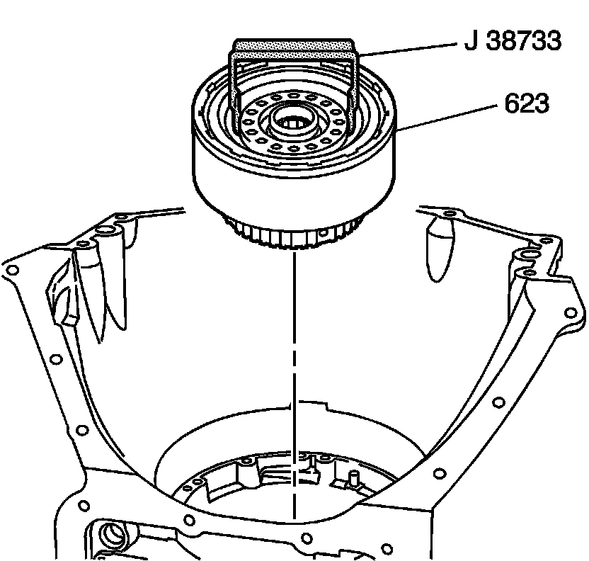

Operation CHARM
: Car repair manuals for everyone.
Home
>>
Cadillac
>>
2007
>>
Escalade ESV AWD V8-6.2L
>>
Repair and Diagnosis
>>
Transmission and Drivetrain
>>
Automatic Transmission/Transaxle
>>
Service and Repair
>>
Overhaul
>>
4L80-E/4L85-E Automatic Transmission
>>
Removal
>>
Direct Clutch Assembly Removal
Direct Clutch Assembly Removal
Direct Clutch Assembly Removal
Tools Required
J 38733 Direct Clutch Assembly Remover/Installer

Using the J 38733, remove the direct clutch housing assembly (623).